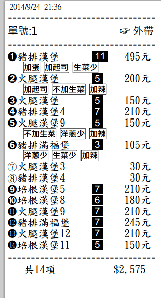
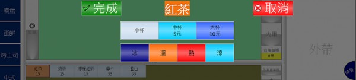
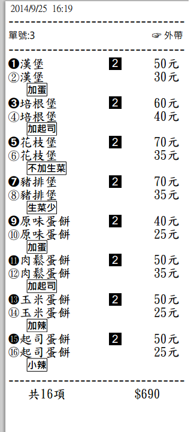

站長為加強單據辨識性 修改了印單樣式

紙張 80 mm
字型設定
品項字型 : 標楷體 標準 16
備註字型 : 微軟正黑 粗 12
請至首頁下載更新
站長為加強單據辨識性 修改了印單樣式

紙張 80 mm
字型設定
品項字型 : 標楷體 標準 16
備註字型 : 微軟正黑 粗 12
請至首頁下載更新
備註選單
新增 "完成" 和 "取消" 兩個按鈕

完成 :無需點完備註 直接回到前台
取消 :直接移除該品項 然後回到前台
改良
相同品項相同備註合併時 ,不同備註同品項則排序一起
